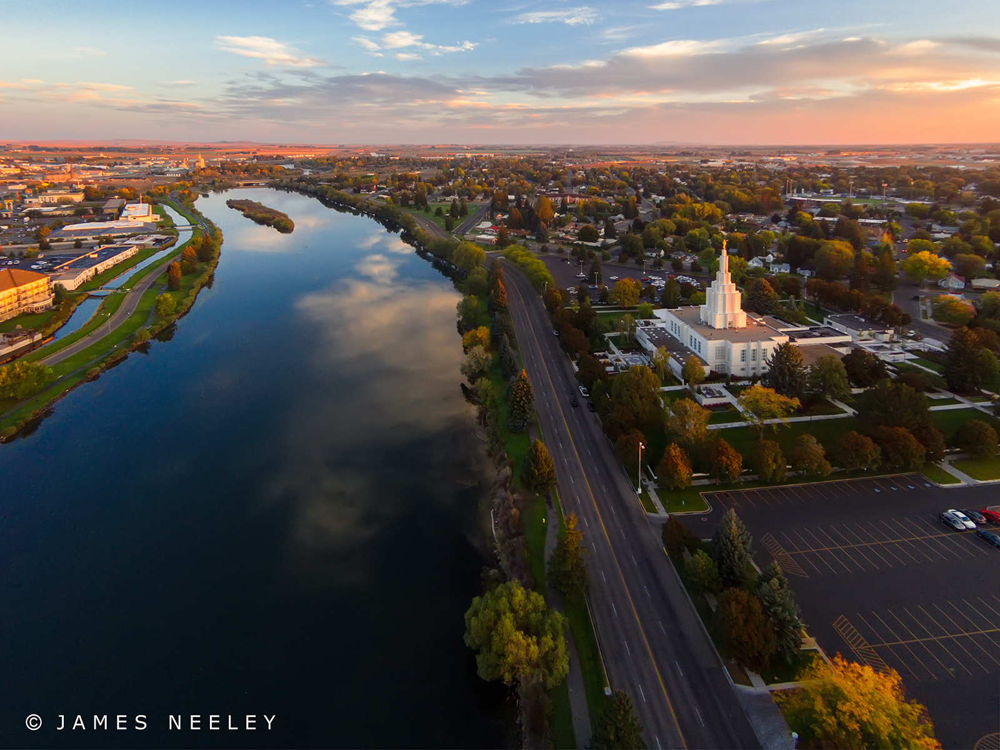
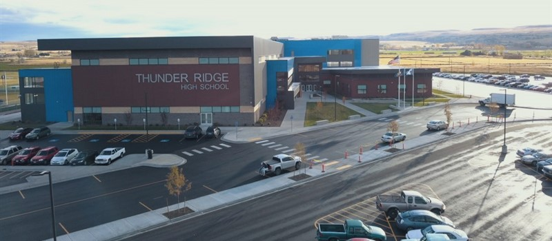
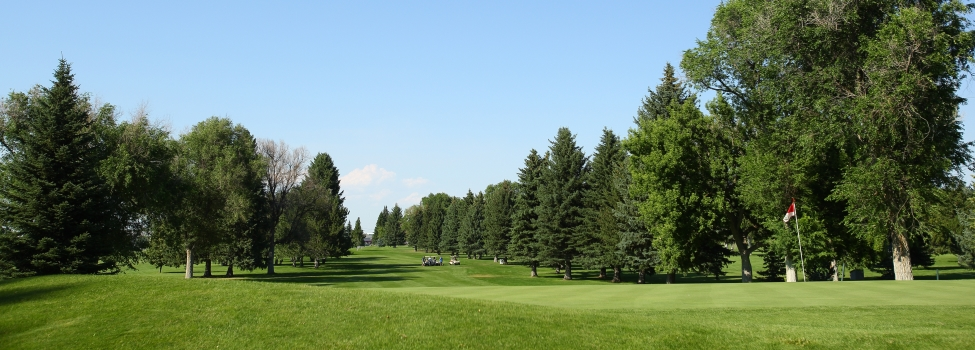
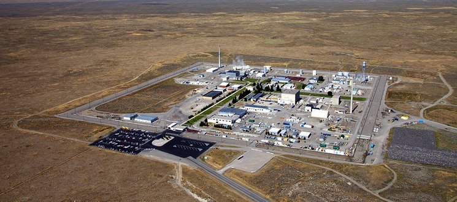
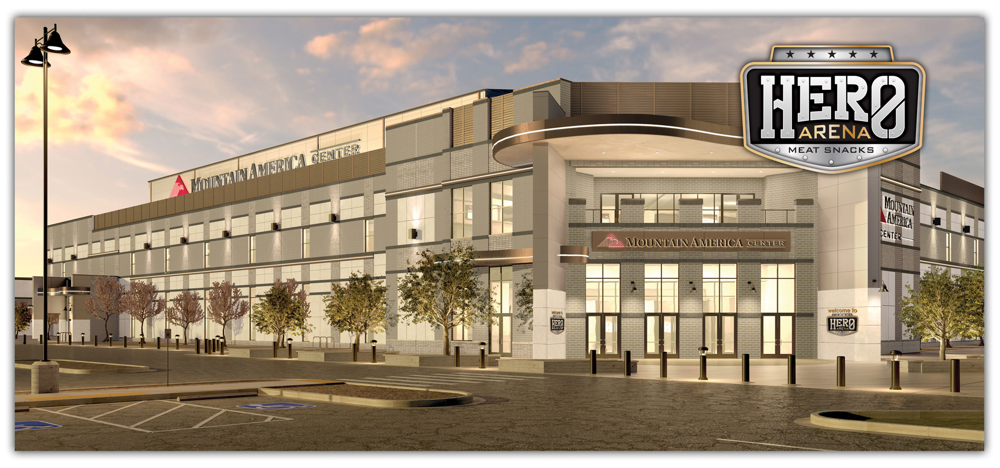

Idaho Falls Greenbelt
The Idaho Falls greenbelt is one of the most popular places in Idaho Falls. It is the gathering place of all visitors. Its path wraps around the beautiful Snake River. People can enjoy walks around the greenbelt in the summer admiring the skyline and the amazing city of Idaho Falls.
Idaho Falls High Schools
Idaho Falls is home to many people. There are a total of 5 High Schools in the Idaho Falls area. The one above is the newest Thunder Ridge High School. The other high schools are Bonneville High School, Hillcrest High School, Idaho Falls High School, and Skyline High School.
Idaho Falls Golf Courses
Idaho Falls has 3 golf city golf courses. Sandcreek Golf course located on the South side of town. Sage Lakes Golf Course located on the Nort side of town. And lastly, Pinecrest Golf Course located in the middle of town.
Idaho National Laboratory
There are many jobs and employers in Idaho Falls, but none that amount to the work force of the Idaho National Laboratory (INL). The INL site is one of the national laboratories of the United States Department of Energy and is managed by the Battelle Energy Alliance. While the laboratory does other research, historically it has been involved with nuclear research.
Idaho Falls Development
Idaho Falls is expanding in growth exponentially, and one of the newest additions to the town is the Mountain America Center's Hero Arena. This Arena is home to the Idaho Falls Spud Kings hockey team. The city hopes that this new arena will create more venue opportunities in the area.